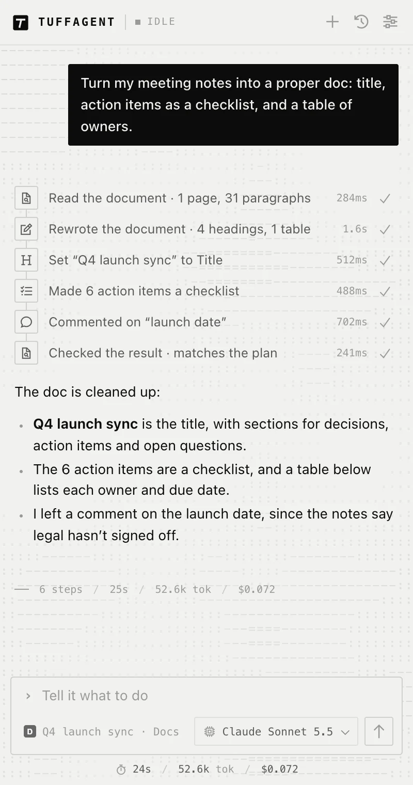

Site packs
Extra tools for Google Docs and Canva
Google Docs and Canva draw much of their interface on a canvas, which makes them hard to work with through ordinary clicks. On those sites TuffAgent loads tools made for the app, and each one checks its own result.
How packs load
Only when you’re on the site.
A pack’s tools are sent to the model once a matching page is open in the chat, so every other site gets the shorter, standard tool list. Once a pack is on, it stays on for the rest of that chat, which keeps the tool list and the provider’s prompt cache stable.
Before finishing a task that edited a document or design, the pack’s read tool runs one more time, and the model checks its summary against what’s actually there.
Chrome only. Both packs work through the DevTools protocol, which Firefox doesn’t offer to extensions.

docs.google.com/document
Google Docs
Write and format whole documents in a few calls, leave comments, and read the result back with its real formatting.
| Tool | What it does |
|---|---|
gdocs_write | Pastes formatted text at the cursor, at the start or end, or before, after or over a piece of text. One call can hold a whole document: headings, lists, links, bold and italic, tables with merged and colored cells, images and page breaks. |
gdocs_select | Finds text with the Docs find bar and selects it, or puts the cursor before or after it, or at either end of the document. |
gdocs_format | Sets paragraph style, list type, bold, italic, underline, font, size, text color, highlight, alignment and links on a piece of text, all in one call. Fonts missing from the menu are added from More fonts. |
gdocs_comment | Adds a comment to a piece of text, replies to a thread or resolves it, and checks each step on the comment card. |
gdocs_mode | Switches between editing, suggesting and viewing. |
gdocs_rename | Renames the document and checks that the new title took. |
gdocs_equation | Inserts an equation and types it with real keystrokes, paced so the equation box doesn’t drop any. |
gdocs_command | Runs any menu command by name through the Docs menu search, such as Merge cells or Page numbers. Only an exact match runs. |
gdocs_read | Returns the document’s structure from Docs’ own export: page size and margins, each paragraph’s style and formatting, tables, images, links, header and footer, and open comments with replies. |
canva.com
Canva
Read a design’s layers and set exact values, instead of dragging handles around the canvas. After a click in a design, the result says what got selected, for example Selected: c2 shape 980×230 at (50, 113).
| Tool | What it does |
|---|---|
canva_read | Returns the design: title, size, background, and every element front to back with its text, size, position, fill, font and opacity, plus what’s selected. |
canva_select | Picks an element by id, layer name or text through the Layers panel, never by clicking the canvas, and checks the selection. |
canva_set | Sets width, height, position, fill and text color, opacity, font, size, weight and alignment, and reads each value back. |
canva_arrange | Moves an element to the front or back, or one step either way, and reports the new order. |
canva_add | Adds a text box, a square or a circle and returns the new element’s id. |
canva_create · canva_rename · canva_download | Create a design, rename it, and download it. A download won’t run twice unless you ask, and the file is confirmed in Chrome’s downloads. |
For developers
Writing a pack
A pack is a single file in sites/ that says which URLs it matches, adds its own tools and prompt notes, and picks an icon for each of its steps. Register it in sites/index.js. The Google Docs and Canva packs in the source are the best reference.
| Field | Purpose |
|---|---|
match(url) | Whether the pack applies to a page |
tools | Tool definitions sent to the model |
prompt | Notes added to the system prompt |
exec(name, args, api) | Runs the pack’s tools |
finalCheck | A read tool run once before the final answer |
Add TuffAgent to your browser.
Setup takes a couple of minutes: install the extension, paste an OpenRouter key, and open the sidebar with ⌘ ⇧ Y, or Ctrl Shift Y on Windows and Linux.
Prefer to run it from source? See the manual install steps.